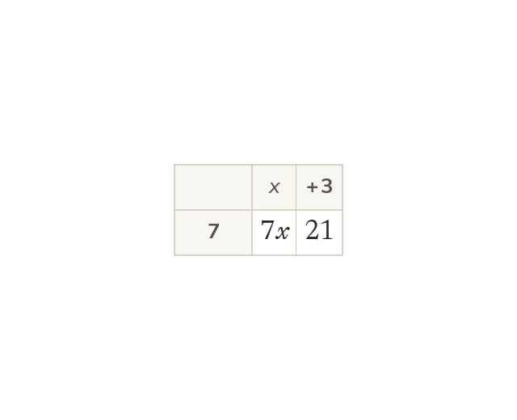

Expand the bracket first
A number outside a bracket multiplies every term inside. The sign in front of a term travels with it. So 7(x + 3) = 7x + 21.
A number outside a bracket multiplies every term inside it, so a(b + c) = ab + ac. The sign in front of a term travels with it.